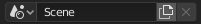

简介¶
场景是组织作品的一种方法。每个blend文件都可以包含多个场景，这些场景共享物体或者材质等其他数据。
场景管理和库的追加和关联基于Blender的 库和数据系统 。如果你不熟悉该系统，最好去阅读下相关的手册知识。
用户可以使用 顶栏 中的 场景数据块 菜单选择和创建场景。
控件¶
参考
- 菜单

场景数据块菜单。¶
- 场景
可用场景列表。
- 添加
- 新建
使用默认值新建一个空的场景。
- 复制设置
使用当前活动场景的设置，新建一个空场景。
- 关联复制
此选项创建出的新场景与当前活动场景的设置和内容完全一致。当然，为了避免复制物体，新场景包含了原场景中的集合的链接。因此，在新场景中对物体作出的改动会在原场景中产生同样效果，因为两个场景使用的是同一批物体。反之亦然。
- 完整复制
使用此选项，不会共享任何内容。 此选项创建一个完全独立的场景，其中包含活动场景内容的副本。 原始场景中的每个对象都被复制，并且还会创建其对象数据的私有副本。
Note
了解 物体 和 物体数据 的差别对于作出正确选择很关键，新增场景方式的选择，决定了哪些信息会从活动场景 复制 到新场景，哪些信息是 共享 (关联)的。
- 删除
X 可以通过点击 顶栏 中名称旁边的 X 来删除当前场景。